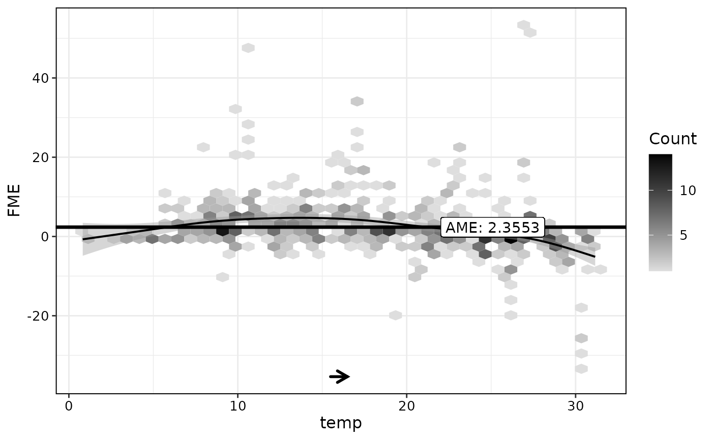

This is a wrapper function for FME$new(...)$compute().
It computes forward marginal effects (FMEs) for a specified change in feature values.
Arguments
- model
The (trained) model, with the ability to predict on new data. This must be a
train.formula(tidymodels),Learner(mlr3),train(caret),lmorglmobject.- data
The data used for computing FMEs, must be data.frame or data.table.
- features
A named list with the feature name(s) and step size(s). The list names should correspond to the names of the feature variables affected by the step. The list can contain either 1 or 2 numeric features, or 1 categorical feature. Numeric features must have a number as step size, categorical features the name of the reference category.
- ep.method
String specifying the method used for extrapolation detection. One of
"none"or"envelope". Defaults to"none".- compute.nlm
Compute NLMs for FMEs for numerical steps. Defaults to
FALSE.- nlm.intervals
Number of intervals for computing NLMs. Results in longer computing time but more accurate approximation of NLMs. Defaults to
1.
Value
ForwardsMarginalEffect object. The field $results contains a data.table with the individual FMEs (and NLMs, if applicable) for all observations that are not extrapolation points.
The field $data.step contains the feature matrix after the step has been applied. Aggregations of observation-wise FMEs and NLMs are contained in $ame and $anlm.
Details
If one or more numeric features are passed to the features argument, FMEs are computed as $$FME_{x, h_{S}} = f(x + h_{S}, x_{-S}) - f(x)$$ where \(h_{S}\) is the step size vector and \(x_{-S}\) the features not contained in features).
If a categorical feature is passed to features, $$FME_{x, c_{j}} = f(c_{j}, x_{-j}) - f(x)$$ where \(c_{j}\) is the selected reference category in features and \(x_{-j}\) the features not contained in features.
References
Scholbeck, C.A., Casalicchio, G., Molnar, C. et al. Marginal effects for non-linear prediction functions. Data Min Knowl Disc (2024). https://doi.org/10.1007/s10618-023-00993-x
Examples
# Train a model:
library(mlr3verse)
library(ranger)
data(bikes, package = "fmeffects")
forest = lrn("regr.ranger")$train(as_task_regr(x = bikes, target = "count"))
# Compute FMEs for a numerical feature:
effects = fme(model = forest, data = bikes, features = list("temp" = 1), ep.method = "envelope")
# Analyze results:
summary(effects)
#>
#> Forward Marginal Effects Object
#>
#> Step type:
#> numerical
#>
#> Features & step lengths:
#> temp, 1
#>
#> Extrapolation point detection:
#> envelope, EPs: 6 of 727 obs. (1 %)
#>
#> Average Marginal Effect (AME):
#> 2.3416
plot(effects)
#> `geom_smooth()` using method = 'loess' and formula = 'y ~ x'

# Extract results:
effects$results
#> Key: <obs.id>
#> obs.id fme
#> <int> <num>
#> 1: 1 2.9106222
#> 2: 2 2.4063463
#> 3: 3 4.8788924
#> 4: 4 -0.6349359
#> 5: 5 1.5575833
#> ---
#> 717: 723 36.2026597
#> 718: 724 8.6551796
#> 719: 725 4.4907142
#> 720: 726 2.6597105
#> 721: 727 11.1546918
# Compute the AME for a categorial feature:
fme(model = forest, data = bikes, features = list("weather" = "rain"))$ame
#> [1] -55.56764